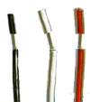
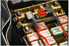
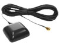
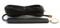

Installation is the most critical step
Installation is easy - 3 wires connection
In this page...
Overview of the installation process
Recomendations about installation
“This system has been useful in many ways. It allows us to track idle time, it has been helpful in reducing avoidable overtime as drivers no longer have to waste valuable time trying to figure out directions. Most important of all, our combined gas usage has declined drastically; very little a correction made a huge difference.” - Mark O'Neill, TX
Enter your number and we will call
you to answer any question.
Next Steps
Hardware Description
Service Description
Online Demo
Prices
Instant Quote
The installation is a 3 step process:
1. Find a secure location where to locate the GPS Tracker (more)
2. Connect the 3 wires of the GPS Tracker to the vehicle's electrical system (more)
3. Find a good location to locate the antennas, and connect them to the transponder (more)
Warning: These are not detailed instructions on how to install the GPS Tracker, but a brief overview to give you an initial idea of the entire process. Detailed instructions will be sent along with all new purchases. You can also request a copy of the installation manual even before a purchase. Just Contact Us.

|
Warning: The GPS Tracker is NOT a waterproof or sealed device. Care must be taken to ensure the device is kept away from water or any other liquids. |
|  |
|
|  |
|
|  |
|
|  |
|
The following table depicts our recommendations about sourcing the installation:
Source |
Our analysis |
|
Best Buy stores Many Best Buy stores across the country offer the service of car-radio installations. They will be able to also install your GPS Tracker. Given that our trackers are widely known across the USA, chances are your Best Buy store has experience with this particular device. Find a Best Buy store here. |
Advantages
Disadvantages
|
|
Car Radio Shops As indicated above, any technician with car radio installation experience will be able to perform a great job. They can easily be found on the Yellow Pages of your city or town. |
Advantages
Disadvantages
|
|
Professional GPS Installers We usually recommend a web site called Vehicle Installers. This is a network of professional installers across the USA. You will be able to find certified technicians or companies with hands-on experience in this type of job. |
Advantages
Disadvantages
|
|
Internal Employees or Company Mechanics This is a great, if not the best alternative. Why? Because you would have the resources in place, and at a cost that you are already paying. Also, any maintenance would be done at the most convenient time, and again at a marginal cost. |
Advantages
Disadvantages
|
 FACT: The installation of the GPS Tracker is the most important step in the entire process
FACT: The installation of the GPS Tracker is the most important step in the entire process
The 2 most important factors on a proper installation are:
The 2 most common causes of poor installation are:
 FACT: Installing a GPS Tracker is very much like installing a car radio
FACT: Installing a GPS Tracker is very much like installing a car radio
 FACT: If you have the tools and the knowledge, you can do the installation yourself
FACT: If you have the tools and the knowledge, you can do the installation yourself
If you would like more information about the installation process, please view our F.A.Q. or Contact Us!